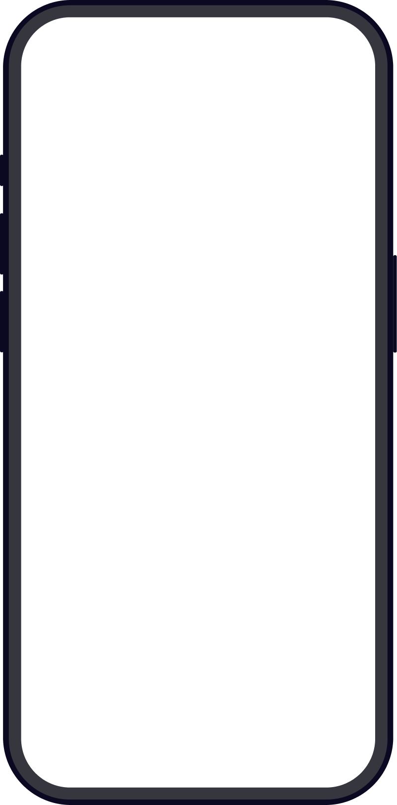

The Times: App redesign
More of The Times, discovered
A new native app for iOS and Android, designed to help readers discover more of The Times. Each week, 70% of Live app readers visit additional sections such as Life & Style, and 22% explore subsections such as Recipes.
